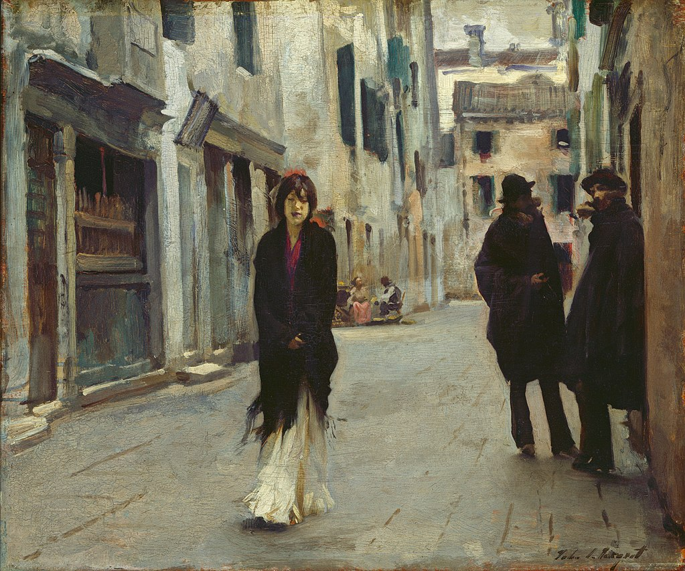

<head>
<meta charset="UTF-8" />
<meta name="keywords" content="drawing, painting" />
<meta name="description" content="drawings by Sunjy" />
<title>Sunjy</title>
<link rel="shortcut icon" type="image/x-icon" href="../../mImages/mCommon/favicon.ico" media="screen" />
<link rel="stylesheet" type="text/css" href="../../mCsses/mCommon/mCssA.css" />
<link rel="stylesheet" type="text/css" href="../../mCsses/mCommon/mCssB.css" />
<link rel="stylesheet" type="text/css" href="../../mCsses/mCommon/mCssC.css" />
<link rel="stylesheet" type="text/css" href="../../mCsses/mCommon/mCssD.css" />
<link rel="stylesheet" type="text/css" href="../../mCsses/mContent/mCssA.css" />
<link rel="stylesheet" type="text/css" href="../../mCsses/mContent/mCssB.css" />
<link rel="stylesheet" type="text/css" href="../../mCsses/mContent/mCssC.css" />
<link rel="stylesheet" type="text/css" href="../../mCsses/mContent/mCssD.css" />
</head>
<script type="text/javascript" src="../../mScripts/mContent/mContentAA.js" /></script>
<script type="text/javascript" src="../../mScripts/mContent/mContentAB.js" /></script>
<script type="text/javascript" src="../../mScripts/mContent/mContentAC.js" /></script>
<script type="text/javascript" src="../../mScripts/mContent/mContentAD.js" /></script>
<script type="text/javascript"></script> 
<script type="text/javascript">
document.write('<div class="mImgAbsolute"></div>');
/*
document.write('<p class="mFontSizeBColor" />From a white paper...</p>');
document.write('<table class="center"><tr><td>');
document.write('');
document.write('</td></tr></table>');
*/
</script>


<script type="text/javascript">
document.write('<p class="mFontSizeBColor" />Street in Venice</p>');
document.write('<p class="mFontSizeSColor" />“Street in Venice” by John Singer Sargent is an oil on wood painting that depicts a young woman walking along the flagstones, kicking her skirt with her feet. She is being observed by two darkly colored men in the shadows to her right.<br><br>Her down-turned eyes, her crossed hands, and steady pace as she passes the two men, show the woman’s concern with the male glare as she deliberately avoids their attention. Her shawl and skirt are shown flowing in motion, suggesting that she is moving quickly past them.<br><br>Sargent painted this work in a post-impressionist manner. It is set in a backstreet off the Calle Larga dei Proverbi, near the Grand Canal in Venice.<br><br>The influence of Impressionism is evident in the broad brushstrokes of her dress and the cropping of the composition. In this work, Sargent has mostly ignored the architectural aspects of the street. He has focused instead on the composition of the figures, and the story portrayed.<br><br>John Singer Sargent painted and drew many Venetian scenes during his many visits to this city. This painting is the second painting that Sargent had created with this name, and the earlier one is dated to 1880-1881.<br><br>At this time in his life, John Singer Sargent was in his mid-20s. He was traveling through Europe to study the masters and gain inspiration for his work. This painting shows the influence of Diego Velázquez and the Italian photographer Carlo Naya.<br></p>');
document.write('<table class="center" /><tr><td>');
document.write('<br>Her down-turned eyes, her crossed hands, and steady pace as she passes the two men, show the woman’s concern with the male glare as she deliberately avoids their attention. Her shawl and skirt are shown flowing in motion, suggesting that she is moving quickly past them.<br><br>Sargent painted this work in a post-impressionist manner. It is set in a backstreet off the Calle Larga dei Proverbi, near the Grand Canal in Venice.<br><br>The influence of Impressionism is evident in the broad brushstrokes of her dress and the cropping of the composition. In this work, Sargent has mostly ignored the architectural aspects of the street. He has focused instead on the composition of the figures, and the story portrayed.<br><br>John Singer Sargent painted and drew many Venetian scenes during his many visits to this city. This painting is the second painting that Sargent had created with this name, and the earlier one is dated to 1880-1881.<br><br>At this time in his life, John Singer Sargent was in his mid-20s. He was traveling through Europe to study the masters and gain inspiration for his work. This painting shows the influence of Diego Velázquez and the Italian photographer Carlo Naya.<br>" />');
document.write('</td></tr></table>');
</script>


